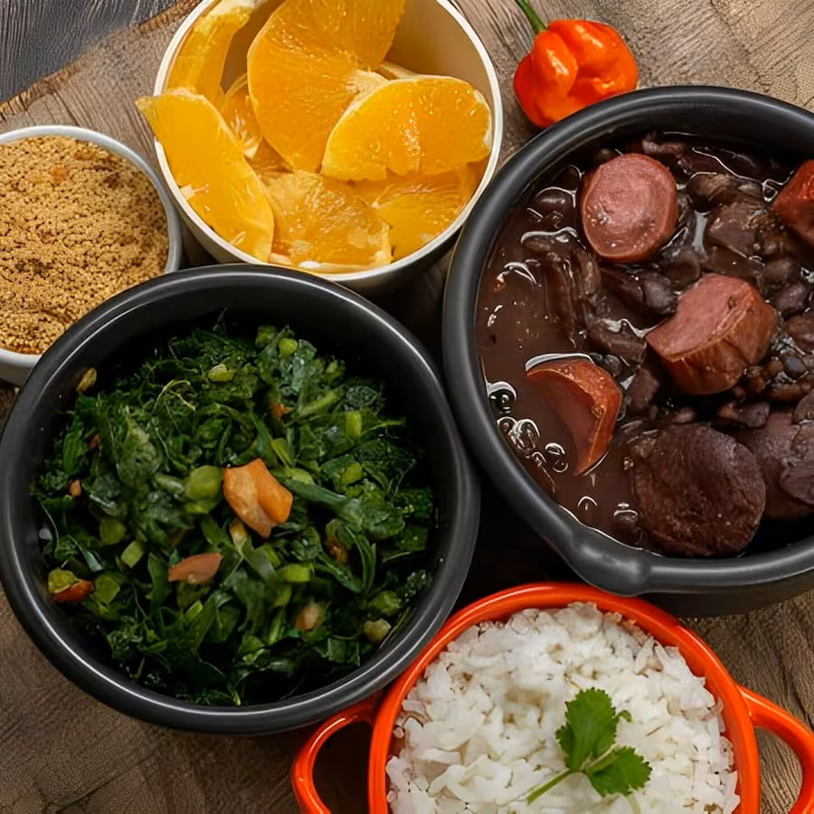

Odin Recipes | Brazilian Feijoada
Brazilian Feijoada (Black Bean Stew)

Description
Brazilian Feijoada is a black bean and pork stew that is often served with farofa (toasted cassava
flour).
Since we're using dried beans, you will need to soak them overnight before cooking the stew.
Ingredients
- 1 pound dry black beans (soaked overnight)*
- 1 tablespoon olive oil
- 4 ounces slab bacon (rind removed), diced
- 1 pound pork ribs, cut into individual ribs
- 2 Mexican chorizo sausages (roughly 11 oz each), sliced**
- 1 smoked sausage (roughly 7 oz), such as linguica or kielbasa, sliced
- 1 large onion, chopped
- 4 cloves garlic, minced
- 3 tomatoes, diced
- 1 teaspoon salt
- 1 teaspoon ground black pepper
- 3 bay leaves
- water
- white rice (for serving)
- farofa (for serving)
Steps
- In a large bowl with water, soak beans overnight.
- When you are ready to make your stew, in a large heavy-bottom soup pot, over medium heat, add the oil and
bacon. Cook until crisp and transfer to a plate.
- Use the same saucepan to brown ribs and sausages in batches. (You will want to be sure to cook the sliced
Mexican chorizo on its own, as it can be very greasy. Drain the grease before continuing.) Set each aside as
cooked.
- If needed, add more oil to the pan. On medium-high, sauté onion, and garlic until soft and translucent,
about 5 minutes. Add tomatoes and cook for another 3 minutes.
- Drain and rinse the soaked beans. Add them to the pot along with the ribs, bacon, sausages, salt, pepper,
and bay leaf. Cover with water (about 8 cups).
- Bring the mixture to a boil and reduce the heat to low. Cover and let it cook for 2 to 2 and a half hours,
or until the beans are soft.
- If the stew is too liquidy, uncover the saucepan and continue to cook for another 20 minutes to allow some
of the liquid to evaporate.
- Serve with white rice and sprinkle some farofa on top.
Notes
-
* 1 pound dry beans = 2 cups dry beans = 6 cups cooked beans (Feel free to substitute 6 cups of drained,
canned beans if desired. However, if substituting canned beans, you will need to reduce the amount of water
to 3-4 cups since the beans will not absorb much water as they cook.)
-
** If you can only find 9 oz chorizo sausages, 2 of that size will work just fine.